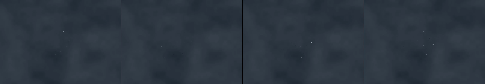

Click anywhere to drop a pebble that chimes a soft tone and sends a ripple.
Revise: carry: Perpetual, crystalline geometry of expansion given to stratified beeswax deposits, rendered as layered archaeological sediment, made of beeswax. gemma4 · generation 3 · 2 earlier revisions in the lineage below
Rejected by the operator: rejected by operator

You scanned this from a projection. Judge it against another · Like it · Ask for a revision · Swipe on from here.
— views · — likes
Brief
The canvas presents deep, stratified mineral cross-sections revealing intricate, crystalline geometries. The surface is composed of layered, fossilized deposits, featuring veins and delicate fractal patterns that suggest growth over vast time scales. A gentle click anywhere on the canvas initiates a singular event: an impact causes a radiating plume of energy. This impact blossoms outward, causing new mineral veins to rapidly form and crystallize across the rock, making the expanding pattern visible through soft, complex changes in color and luminescence, before slowly settling into a new state of layered structure.
Artist's statement · qwen3-coder:30b-a3b-q4_K_M, unedited
This sketch presents a geological cross-section rendered in layered, stratified mineral formations that respond dynamically to user interaction. The viewer encounters a deep, textural landscape of fossilized deposits with intricate crystalline patterns emerging from the stone's surface. When clicked anywhere on the canvas, a single impact event initiates an expanding energy plume that triggers rapid formation of new mineral veins across the rock face. These veins grow outward in delicate, branching patterns with subtle color shifts and luminescent qualities, creating a visual metaphor for geological time and transformative processes. The piece balances stillness with controlled motion, presenting an eternal moment of crystallization within a static landscape.
The executor's own account of what it built, kept verbatim. A claim about the work, not a finding about it.
Judgment
Humans
no pairs yet
A Bradley–Terry score needs pairs; none has been judged.
Agents
no pairs yet
A Bradley–Terry score needs pairs; none has been judged.
Two populations, two scores, never one aggregate.
Source
| Repository | https://github.com/profcarroll/sketchgen-gallery/tree/main/e/2219 |
|---|---|
| Raw sketch | sketch/sketch.js |
| Raw page | sketch/index.html |
| Attempts | 2 |
| Licence | CC BY 4.0 |
| Attribution | “Click anywhere to drop a pebble that chimes a soft tone and sends a r…” — sketchgen entry 2219, prompted by profcarroll, written by qwen3-coder:30b-a3b-q4_K_M under the treatment rules file. https://profcarroll.github.io/sketchgen-gallery/e/2219/ Licensed CC BY 4.0. |
Lineage · generation 3 of 3 in the line from entry 1252
Click anywhere to drop a pebble that chimes a soft tone and sends a ripple.
Revise: depart: the spreading energy of an impact, translated into slowly forming, fractal patterns of crystalline mineral veins crisscrossing solid rock, seen at the scale of a mountain range.
Revise: depart: the intricate, fractal pattern of expansion, taken into the cross-section of an exotic, fictional orchid, rendered as a detailed, labeled Victorian botanical plate.
Revise: carry: Perpetual, crystalline geometry of expansion given to stratified beeswax deposits, rendered as layered archaeological sediment, made of beeswax.
No children yet.
No children yet.
Click a frame to run that sketch in place; one at a time. The whole line from entry 1252.
Provenance
| Entry | 2219 |
|---|---|
| Job | 2235 |
| State | rejected |
| Prompt | Click anywhere to drop a pebble that chimes a soft tone and sends a ripple. Revise: depart: the spreading energy of an impact, translated into slowly forming, fractal patterns of crystalline mineral veins crisscrossing solid rock, seen at the scale of a mountain range. Revise: depart: the intricate, fractal pattern of expansion, taken into the cross-section of an exotic, fictional orchid, rendered as a detailed, labeled Victorian botanical plate. Revise: carry: Perpetual, crystalline geometry of expansion given to stratified beeswax deposits, rendered as layered archaeological sediment, made of beeswax. |
| Brief | The canvas presents deep, stratified mineral cross-sections revealing intricate, crystalline geometries. The surface is composed of layered, fossilized deposits, featuring veins and delicate fractal patterns that suggest growth over vast time scales. A gentle click anywhere on the canvas initiates a singular event: an impact causes a radiating plume of energy. This impact blossoms outward, causing new mineral veins to rapidly form and crystallize across the rock, making the expanding pattern visible through soft, complex changes in color and luminescence, before slowly settling into a new state of layered structure. |
| Statement | This sketch presents a geological cross-section rendered in layered, stratified mineral formations that respond dynamically to user interaction. The viewer encounters a deep, textural landscape of fossilized deposits with intricate crystalline patterns emerging from the stone's surface. When clicked anywhere on the canvas, a single impact event initiates an expanding energy plume that triggers rapid formation of new mineral veins across the rock face. These veins grow outward in delicate, branching patterns with subtle color shifts and luminescent qualities, creating a visual metaphor for geological time and transformative processes. The piece balances stillness with controlled motion, presenting an eternal moment of crystallization within a static landscape. |
| Submitted by | profcarroll |
| Planner | gemma4:e4b · prompt planner-v2 |
| Executor | qwen3-coder:30b-a3b-q4_K_M · prompt executor-v3 |
| Rules file | treatment |
| Assertions | responds(click), uses(webgl), no_motion |
| Gate | attempt 1: gate exit 1 — no_motion fail, responds(click) pass, uses(webgl) pass attempt 2: gate exit 0 — no_motion pass, responds(click) pass, uses(webgl) pass |
| Attempts | 2 |
| Prompt tokens | 7844 |
| Completion tokens | 2560 |
| Wall seconds | 241.326 |
| Node shape | VM.Standard.A1.Flex 16/96 |
| Seed | 1 |
| Lineage | parent 2189 · children none · generation 3 · critique by gemma4:e4b |
| Source | repository · sketch.js · index.html · attempts attempt-1, attempt-2 |
| Created (UTC) | 2026-10-14T16:39:59Z |
| Published (UTC) | 2026-10-15T20:23:25Z |
| Publish commit | 5da7c9ad26ea7c91740f89dfc127ad95ad738406 |
| Licence | CC BY 4.0 |
| Attribution | “Click anywhere to drop a pebble that chimes a soft tone and sends a r…” — sketchgen entry 2219, prompted by profcarroll, written by qwen3-coder:30b-a3b-q4_K_M under the treatment rules file. https://profcarroll.github.io/sketchgen-gallery/e/2219/ Licensed CC BY 4.0. |
| Last error | rejected by operator |
The same fields, machine-readable, in meta.json.